<!DOCTYPE html>
<html lang="en"></html>
<head>
  <meta charset="UTF-8"/>
  <title>fisioMano</title>
  <link href="https://fonts.googleapis.com/css?family=Raleway:700,300,400,800" rel="stylesheet" type="text/css"/>
  <link href="https://fonts.googleapis.com/css?family=Roboto:300italic,500" rel="stylesheet" type="text/css"/>
  <link rel="stylesheet" href="css/style.css"/>
</head>
<body>
  <header class="header">
    <div class="container">
      <div class="row">
        <div class="col-sm-8 col-md-3"><a href="#" class="logo"></a></div>
        <div class="col-sm-4 col-md-0 righted">
          <div id="collapseButton" class="main-menu__burger">
            <div class="main-menu__checker"></div>
            <div class="main-menu__strip"></div>
          </div>
        </div>
        <div class="col-sm-6 col-off-sm-6 col-md-9 col-off-md-0">
          <nav id="collapseMenu" class="main-menu push-to-right">
            <ul class="main-menu__list">
              <li class="main-menu__item"><a href="#" class="main-menu__a">Home</a></li>
              <li class="main-menu__item"><a href="#" class="main-menu__a">News</a></li>
              <li class="main-menu__item main-menu__item--with-sub"><a href="#" class="main-menu__a">Reabilitazione</a>
                <ul class="main-menu__sublist">
                  <li class="main-menu__subitem"><a href="#" class="main-menu__suba">Punkt 1</a></li>
                  <li class="main-menu__subitem"><a href="#" class="main-menu__suba">Punkt 2</a></li>
                  <li class="main-menu__subitem"><a href="#" class="main-menu__suba">Punkt 3</a></li>
                </ul>
              </li>
              <li class="main-menu__item main-menu__item--with-sub"><a href="#" class="main-menu__a">Chi Siamo</a>
                <ul class="main-menu__sublist">
                  <li class="main-menu__subitem"><a href="#" class="main-menu__suba">Punkt 1</a></li>
                  <li class="main-menu__subitem"><a href="#" class="main-menu__suba">Punkt 2</a></li>
                  <li class="main-menu__subitem"><a href="#" class="main-menu__suba">Punkt 3</a></li>
                </ul>
              </li>
              <li class="main-menu__item main-menu__item--with-sub"><a href="#" class="main-menu__a">Link Consigliati</a>
                <ul class="main-menu__sublist">
                  <li class="main-menu__subitem"><a href="#" class="main-menu__suba">Punkt 1</a></li>
                  <li class="main-menu__subitem"><a href="#" class="main-menu__suba">Punkt 2</a></li>
                  <li class="main-menu__subitem"><a href="#" class="main-menu__suba">Punkt 3</a></li>
                </ul>
              </li>
              <li class="main-menu__item"><a href="#" class="main-menu__a">Contatti</a></li>
            </ul>
          </nav>
        </div>
      </div>
    </div>
  </header>
  <main>
    <section class="promo">
      <div class="container">
        <div class="row">
          <div class="col-sm-12 col-md-8 col-lg-6 col-off-lg-1 centered">
            <blockquote class="promo__quotes">
              <p class="promo__text">“La mano è l’organo più prezioso che noi possediamo. La perfetta coordinazione tra cervello e mani ha determinato il destino dell’uomo e il suo posto nella natura.”</p>
              <cite class="promo__autor">Pulvertaft</cite>
            </blockquote>
          </div>
        </div>
      </div>
    </section>
    <section class="hostro">
      <div class="container">
        <div class="row centered">
          <div class="col-sm-12 col-md-9 col-lg-7">
            <h1 class="hostro__title">Il nostro lavoro</h1>
            <p class="hostro__text">Questo sito racchiude il frutto del nostro lavoro, dei nostri studi e delle nostre <b>esperienze riabilitative </b>maturate in tanti anni di esercizio della professione. <b>Fisiomano.com </b>vuole essere il giusto strumento ed un valido supporto per tutti coloro che intendono affrontare nel miglior modo possibile la <b>riabilitazione delle loro mani. </b></p><a href="#" class="hostro__button">Approfondisci</a>
          </div>
        </div>
      </div>
    </section>
    <section class="news centered">
      <div class="container">
        <h2 class="news__title">News &amp; Eventi</h2>
        <div class="row">
          <div class="col-sm-12 col-md-4">
            <div class="new-item lefted">
              <time datetime="2015-07-27" class="new-item__date">27 Luglio 2015</time>
              <h3 class="new-item__title">Hand Fun Meeting - Barcellona, 18-19 Settembre 2015</h3><a href="#" class="new-item__button">Approfondisci</a>
            </div>
          </div>
          <div class="col-sm-12 col-md-4">
            <div class="new-item lefted">
              <time datetime="2015-07-11" class="new-item__date">11 Luglio 2015</time>
              <h3 class="new-item__title">Fisiomano-Milano Chiusura estiva</h3><a href="#" class="new-item__button">Approfondisci</a>
            </div>
          </div>
          <div class="col-sm-12 col-md-4">
            <div class="new-item lefted">
              <time datetime="2015-07-08" class="new-item__date">08 Luglio 2015</time>
              <h3 class="new-item__title">53º Congresso Nazionale SICM - Viterbo, 8-10 Ottobre 2015</h3><a href="#" class="new-item__button">Approfondisci</a>
            </div>
          </div>
        </div><a class="news__button">Leggi tutte le news</a>
      </div>
    </section>
    <section class="tutori">
      <div class="container-fluid">
        <div class="row">
          <div class="tutori__item tutori__item--left col-sm-12 col-md-6 centered">
            <div class="tutori__colorfix">
              <h3 class="tutori__title">Vai alla galleria Tu</h3>
            </div>
          </div>
          <div class="tutori__item tutori__item--right col-sm-12 col-md-6 centered">
            <div class="tutori__colorfix">
              <h3 class="tutori__title">Riabilitazione</h3>
              <ul class="tutori__list">
                <li class="tutori__punkt"><a href="#" class="tutori__a">La riabilitazione della mano</a></li>
                <li class="tutori__punkt"><a href="#" class="tutori__a">La riabilitazione del gomito</a></li>
                <li class="tutori__punkt"><a href="#" class="tutori__a">Campi di intervento</a></li>
                <li class="tutori__punkt"><a href="#" class="tutori__a">Tutori</a></li>
                <li class="tutori__punkt"><a href="#" class="tutori__a">Piccoli consigli pratici</a></li>
                <li class="tutori__punkt"><a href="#" class="tutori__a">Terapie specialistiche</a></li>
                <li class="tutori__punkt"><a href="#" class="tutori__a">Casi clinici</a></li>
                <li class="tutori__punkt"><a href="#" class="tutori__a">Patologie</a></li>
              </ul>
            </div>
          </div>
        </div>
      </div>
    </section>
    <section class="pazient">
      <div class="container">
        <h2 class="pazient__title"></h2>
      </div>
    </section>
  </main>
  <script src="js/main.min.js"></script>
</body>